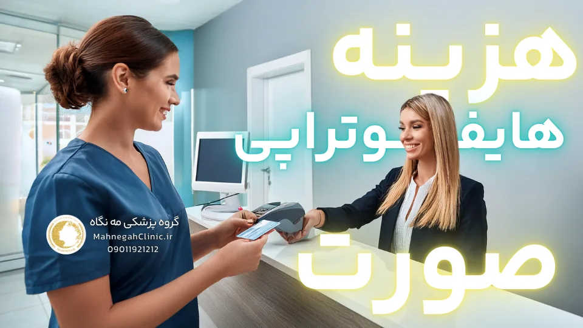

خانه / مجله / جوانسازی پوست
هزینه هایفوتراپی صورت در سعادت آباد: قیمتها، تخفیفها و شرایط پرداخت

قبل از شروع لازمه بدونید اگر میخاید 10 درصد تخفیف ویژه برای هزینه هایفوتراپی صورت در سعادت آباد رو داشته باشید، اینجا کلیک کنید. همچنین خوندن پُست لیفتینگ و جوانسازی بدون جراحی رو بهتون پیشنهاد میدم.
خوب شروع کنیم!
هزینه هایفوتراپی صورت در سعادت آباد: همه چیزهایی که باید بدانید
اگر به دنبال جوانسازی و لیفت صورت بدون جراحی هستید، هایفوتراپی یکی از گزینههای محبوب و موثر است. اما هزینه هایفوتراپی صورت در سعادت آباد چقدر است؟ در این مقاله، به بررسی عوامل موثر بر هزینه هایفوتراپی، میانگین هزینهها در سعادت آباد و نکاتی که باید قبل از تصمیمگیری در نظر بگیرید، میپردازیم.
عوامل موثر بر هزینه هایفوتراپی صورت در سعادت آباد
هزینه هایفوتراپی صورت میتواند تحت تأثیر عوامل مختلفی قرار بگیرد. برخی از این عوامل عبارتند از:
- ناحیه تحت درمان: هزینه هایفوتراپی به وسعت ناحیه تحت درمان بستگی دارد. به عنوان مثال، هزینه هایفوتراپی کل صورت بیشتر از هزینه هایفوتراپی یک ناحیه خاص مانند دور چشم یا گردن است.
- تعداد جلسات: تعداد جلسات مورد نیاز برای دستیابی به نتایج مطلوب نیز بر هزینه کلی تأثیر میگذارد. برخی افراد ممکن است تنها به یک جلسه نیاز داشته باشند، در حالی که دیگران ممکن است به چند جلسه نیاز داشته باشند.
- نوع دستگاه: نوع دستگاه هایفوتراپی مورد استفاده نیز میتواند بر هزینه تأثیر بگذارد. دستگاههای جدیدتر و پیشرفتهتر ممکن است هزینه بیشتری داشته باشند.
- تجربه و تخصص پزشک: هزینه هایفوتراپی ممکن است بسته به تجربه و تخصص پزشک متفاوت باشد. پزشکان با تجربه و مهارت بالا ممکن است هزینه بیشتری دریافت کنند.
- موقعیت کلینیک: موقعیت جغرافیایی کلینیک نیز میتواند بر هزینه هایفوتراپی تأثیر بگذارد. کلینیکهای واقع در مناطق مرفه ممکن است هزینه بیشتری داشته باشند.
میانگین هزینه هایفوتراپی صورت در سعادت آباد
هزینه هایفوتراپی صورت در سعادت آباد میتواند بسته به عوامل ذکر شده در بالا متفاوت باشد. با این حال، به طور کلی، میتوانید انتظار داشته باشید که برای هر جلسه هایفوتراپی صورت بین 1 تا 3 میلیون تومان بپردازید. هزینه هایفوتراپی کل صورت ممکن است بیشتر باشد و به 3 تا 5 میلیون تومان برسد.
همچنین، برخی کلینیکها ممکن است تخفیفهایی برای بستههای چند جلسهای ارائه دهند. بنابراین، اگر قصد دارید چند جلسه هایفوتراپی انجام دهید، بهتر است در مورد تخفیفها از کلینیک سوال کنید.
در نهایت، مهم است که به یاد داشته باشید که هزینه هایفوتراپی تنها یکی از عوامل مهم در تصمیمگیری است. انتخاب یک کلینیک معتبر با پزشکان متخصص و باتجربه نیز بسیار مهم است. قبل از انجام هایفوتراپی، حتماً با پزشک خود مشورت کنید و در مورد انتظارات خود و نتایج ممکن صحبت کنید.
نکته: قیمتها ممکن است در طول زمان تغییر کنند، بنابراین بهتر است قبل از تصمیمگیری نهایی، با کلینیک تماس بگیرید و قیمتهای بهروز را استعلام کنید.
امیدوارم این اطلاعات به شما در درک بهتر هزینه هایفوتراپی صورت در سعادت آباد کمک کند. در بخشهای بعدی این مقاله، به بررسی سایر جنبههای هایفوتراپی و هزینههای آن خواهیم پرداخت.
هزینه هایفوتراپی صورت چقدر است؟
یکی از سوالات رایج افرادی که به دنبال جوانسازی پوست خود هستند این است که "هزینه هایفوتراپی صورت چقدر است؟" پاسخ به این سوال کمی پیچیده است زیرا هزینه هایفوتراپی میتواند تحت تأثیر عوامل مختلفی قرار بگیرد. با این حال، در این بخش سعی میکنیم به شما یک دید کلی در مورد هزینههای هایفوتراپی و مقایسه آن با سایر روشها ارائه دهیم.
مقایسه هزینه هایفوتراپی با سایر روشهای جوانسازی
هزینه هایفوتراپی در مقایسه با روشهای جراحی لیفت صورت، بسیار کمتر است. جراحی لیفت صورت میتواند هزینهای بسیار بالا داشته باشد و همچنین نیاز به دوره نقاهت طولانی دارد. از سوی دیگر، هایفوتراپی یک روش غیرتهاجمی است که نیازی به برش یا بخیه ندارد و دوره نقاهت آن بسیار کوتاه است.
در مقایسه با سایر روشهای غیرتهاجمی جوانسازی پوست مانند تزریق بوتاکس یا فیلر، هزینه هایفوتراپی ممکن است کمی بالاتر باشد. با این حال، نتایج هایفوتراپی ماندگاری بیشتری دارند و میتوانند تا چند سال باقی بمانند، در حالی که نتایج بوتاکس و فیلر معمولاً چند ماه دوام دارند.
آیا هزینه هایفوتراپی ارزشش را دارد؟
اگر به دنبال یک روش جوانسازی پوست با نتایج ماندگار و طبیعی هستید، هایفوتراپی میتواند یک گزینه عالی باشد. اگرچه هزینه هایفوتراپی ممکن است در ابتدا کمی بالا به نظر برسد، اما با توجه به ماندگاری نتایج و عدم نیاز به جراحی، میتواند یک سرمایهگذاری ارزشمند برای زیبایی و جوانی پوست شما باشد.
همچنین، هایفوتراپی میتواند به بهبود اعتماد به نفس شما کمک کند و باعث شود احساس جوانی و شادابی بیشتری داشته باشید. این مزایای روانی نیز میتوانند در تصمیمگیری شما برای انجام هایفوتراپی تأثیرگذار باشند.
در نهایت، تصمیم برای انجام هایفوتراپی و ارزیابی هزینه هایفوتراپی به نیازها، بودجه و اولویتهای شما بستگی دارد. قبل از تصمیمگیری نهایی، حتماً با پزشک خود مشورت کنید و در مورد انتظارات خود و نتایج ممکن صحبت کنید.
هزینه ی هایفوتراپی صورت: آیا تحت پوشش بیمه قرار میگیرد؟
یکی از دغدغههای مهم بسیاری از افراد هنگام تصمیمگیری برای انجام هایفوتراپی، هزینه ی هایفوتراپی صورت و امکان پوشش آن توسط بیمه است. در این بخش، به بررسی رابطه بین بیمه و هایفوتراپی و شرایط پوشش بیمه برای این روش درمانی میپردازیم.
بیمه و هزینه هایفوتراپی
به طور کلی، هزینه هایفوتراپی تحت پوشش بیمههای پایه قرار نمیگیرد.
این به این دلیل است که هایفوتراپی معمولاً به عنوان یک روش زیبایی و غیرضروری در نظر گرفته میشود. بیمههای پایه معمولاً هزینههای درمانهای ضروری و پزشکی را پوشش میدهند و هایفوتراپی در این دسته قرار نمیگیرد.
با این حال، برخی از بیمههای تکمیلی ممکن است بخشی از هزینه ی هایفوتراپی صورت را پوشش دهند. این بستگی به نوع بیمه تکمیلی شما و شرایط قرارداد آن دارد. برخی از بیمههای تکمیلی ممکن است هزینههای مربوط به درمانهای زیبایی را تا سقف مشخصی پوشش دهند.
شرایط پوشش بیمه برای هزینه هایفوتراپی صورت در سعادت آباد
اگر قصد دارید هزینه هایفوتراپی را از طریق بیمه تکمیلی خود پوشش دهید، بهتر است قبل از انجام هایفوتراپی با شرکت بیمه خود تماس بگیرید و شرایط پوشش را بررسی کنید. برخی از شرایطی که ممکن است برای پوشش بیمه هایفوتراپی لازم باشد عبارتند از:
- تجویز پزشک: ممکن است نیاز باشد که هایفوتراپی توسط پزشک متخصص تجویز شود و دلیل پزشکی برای انجام آن وجود داشته باشد. به عنوان مثال، اگر هایفوتراپی برای درمان افتادگی پلک ناشی از یک بیماری خاص تجویز شود، ممکن است تحت پوشش بیمه قرار بگیرد.
- انجام هایفوتراپی در مراکز درمانی طرف قرارداد: برخی از بیمههای تکمیلی ممکن است تنها هزینههای هایفوتراپی را در صورتی پوشش دهند که در مراکز درمانی طرف قرارداد با بیمه انجام شود.
- سقف پوشش: بیمههای تکمیلی معمولاً یک سقف مشخص برای پوشش هزینههای درمانهای زیبایی دارند. ممکن است هزینه هایفوتراپی از این سقف تجاوز کند و شما مجبور به پرداخت مابهالتفاوت شوید.
در نهایت، بهتر است قبل از انجام هایفوتراپی، با شرکت بیمه خود تماس بگیرید و شرایط پوشش را به دقت بررسی کنید. همچنین، میتوانید از کلینیک یا پزشک خود در مورد امکان پوشش بیمه برای هایفوتراپی سوال کنید.
هزینه هر جلسه هایفوتراپی صورت: آیا به چند جلسه نیاز دارم؟
یکی از سوالات متداول در مورد هایفوتراپی این است که "به چند جلسه هایفوتراپی نیاز دارم؟" و طبیعتا "هزینه هر جلسه هایفوتراپی صورت چقدر میشود؟" در این بخش به این سوالات پاسخ میدهیم و در مورد ماندگاری نتایج هایفوتراپی صحبت میکنیم.
تعداد جلسات مورد نیاز برای هایفوتراپی
تعداد جلسات هایفوتراپی مورد نیاز برای هر فرد میتواند متفاوت باشد و به عوامل مختلفی بستگی دارد، از جمله:
- سن: با افزایش سن، پوست خاصیت ارتجاعی خود را از دست میدهد و ممکن است نیاز به جلسات بیشتری برای دستیابی به نتایج مطلوب باشد.
- میزان افتادگی و شلی پوست: هرچه میزان افتادگی و شلی پوست بیشتر باشد، ممکن است نیاز به جلسات بیشتری برای لیفت و سفت کردن پوست باشد.
- اهداف درمانی: اگر به دنبال نتایج جزئی و بهبود کلی در ظاهر پوست هستید، ممکن است یک جلسه کافی باشد. اما اگر به دنبال لیفت قابل توجه و رفع چین و چروکهای عمیق هستید، ممکن است به چند جلسه نیاز داشته باشید.
- پاسخ فردی به درمان: هر فرد به طور متفاوتی به هایفوتراپی پاسخ میدهد. برخی افراد ممکن است پس از یک جلسه نتایج قابل توجهی را مشاهده کنند، در حالی که دیگران ممکن است به جلسات بیشتری نیاز داشته باشند.
به طور کلی، اکثر افراد برای دستیابی به نتایج مطلوب به 1 تا 3 جلسه هایفوتراپی نیاز دارند. با این حال، پزشک شما میتواند پس از ارزیابی وضعیت پوست شما، تعداد جلسات مورد نیاز را به شما توصیه کند.
ماندگاری نتایج هایفوتراپی
یکی از مزایای بزرگ هایفوتراپی، ماندگاری نتایج آن است. نتایج هایفوتراپی میتوانند تا 1 تا 2 سال باقی بمانند. البته، این به عوامل مختلفی مانند سن، سبک زندگی و مراقبتهای پوستی شما بستگی دارد.
برای حفظ نتایج هایفوتراپی، توصیه میشود که از یک رژیم مراقبت از پوست مناسب پیروی کنید و از قرار گرفتن در معرض نور خورشید بدون محافظت خودداری کنید. همچنین، ممکن است پزشک شما توصیه کند که هر 6 تا 12 ماه یک جلسه هایفوتراپی برای حفظ نتایج انجام دهید.
با توجه به ماندگاری نتایج هایفوتراپی، هزینه هر جلسه هایفوتراپی صورت میتواند یک سرمایهگذاری ارزشمند برای زیبایی و جوانی پوست شما باشد.
هزینه لیفت صورت با هایفوتراپی: آیا به صرفه است؟
اگر به دنبال روشی برای لیفت صورت هستید، احتمالا با گزینههای جراحی و غیرجراحی مختلفی روبرو شدهاید. یکی از روشهای غیرجراحی محبوب و موثر، لیفت صورت با هایفوتراپی است. اما آیا هزینه لیفت صورت با هایفوتراپی به صرفه است؟ در این بخش، مزایا و معایب این روش را بررسی میکنیم تا به شما در تصمیمگیری کمک کنیم.
مزایای لیفت صورت با هایفوتراپی
- غیرتهاجمی: هایفوتراپی یک روش غیرتهاجمی است، به این معنی که نیازی به برش، بخیه یا بیهوشی ندارد. این موضوع باعث میشود که دوره نقاهت بسیار کوتاه باشد و شما بتوانید بلافاصله به فعالیتهای روزمره خود بازگردید.
- نتایج طبیعی: هایفوتراپی باعث تحریک تولید کلاژن در پوست میشود، که به تدریج باعث لیفت و سفت شدن پوست میشود. این فرآیند طبیعی باعث میشود که نتایج هایفوتراپی بسیار طبیعی به نظر برسند و هیچ اثری از جراحی روی صورت شما باقی نماند.
- ماندگاری نتایج: نتایج هایفوتراپی میتوانند تا 1 تا 2 سال باقی بمانند. این در مقایسه با سایر روشهای غیرجراحی مانند تزریق بوتاکس یا فیلر که نتایج آنها معمولاً چند ماه دوام دارند، بسیار قابل توجه است.
- هزینه کمتر نسبت به جراحی: هزینه لیفت صورت با هایفوتراپی در مقایسه با جراحی لیفت صورت بسیار کمتر است. جراحی لیفت صورت میتواند هزینهای بسیار بالا داشته باشد و همچنین نیاز به دوره نقاهت طولانی دارد.
- ایمنی: هایفوتراپی یک روش ایمن و موثر است که عوارض جانبی کمی دارد. برخی از عوارض جانبی ممکن شامل قرمزی، تورم و حساسیت خفیف در ناحیه تحت درمان است که معمولاً ظرف چند روز برطرف میشوند.
معایب لیفت صورت با هایفوتراپی
- نیاز به چند جلسه: برای دستیابی به نتایج مطلوب، ممکن است به چند جلسه هایفوتراپی نیاز داشته باشید. این موضوع میتواند هزینه لیفت صورت با هایفوتراپی را افزایش دهد.
- نتایج تدریجی: نتایج هایفوتراپی به تدریج ظاهر میشوند و ممکن است چند ماه طول بکشد تا نتایج کامل را مشاهده کنید.
- عدم مناسب بودن برای همه: هایفوتراپی برای افرادی که افتادگی پوست شدید دارند یا به دنبال نتایج بسیار چشمگیر هستند، ممکن است مناسب نباشد. در این موارد، جراحی لیفت صورت ممکن است گزینه بهتری باشد.
در نهایت، تصمیم برای انجام لیفت صورت با هایفوتراپی و ارزیابی هزینه لیفت صورت با هایفوتراپی به نیازها، بودجه و اولویتهای شما بستگی دارد. قبل از تصمیمگیری نهایی، حتماً با پزشک خود مشورت کنید و در مورد انتظارات خود و نتایج ممکن صحبت کنید.
هایفو هزینه: چرا متفاوت است؟
یکی از سوالات رایج در مورد هایفوتراپی، تفاوت قیمت آن در کلینیکها و مراکز مختلف است. در این بخش به بررسی عوامل تاثیرگذار بر هایفو هزینه میپردازیم تا به شما در درک بهتر این تفاوتها کمک کنیم.
نوع دستگاه هایفوتراپی
یکی از عوامل اصلی تاثیرگذار بر هایفو هزینه، نوع دستگاه مورد استفاده است. دستگاههای هایفوتراپی در انواع مختلفی با تکنولوژیها و قابلیتهای متفاوت وجود دارند. برخی از دستگاهها جدیدتر و پیشرفتهتر هستند و ممکن است نتایج بهتری ارائه دهند، اما طبیعتا هزینه استفاده از آنها نیز بالاتر است. همچنین، برخی از دستگاهها ممکن است دارای قابلیتهای اضافی مانند خنککننده پوست یا تصویربرداری اولتراسوند باشند که میتواند بر هزینه نهایی تأثیر بگذارد.
تجربه و تخصص پزشک
یکی دیگر از عوامل مهم در تعیین هایفو هزینه، تجربه و تخصص پزشک انجام دهنده آن است. پزشکان با تجربه و مهارت بالا ممکن است هزینه بیشتری دریافت کنند، زیرا آنها دانش و تخصص لازم برای انجام هایفوتراپی به بهترین شکل ممکن و با کمترین عوارض را دارند. همچنین، برخی از پزشکان ممکن است دورههای آموزشی تخصصی در زمینه هایفوتراپی را گذرانده باشند که میتواند بر هزینه خدمات آنها تأثیر بگذارد.
علاوه بر این دو عامل اصلی، عوامل دیگری نیز میتوانند بر هایفو هزینه تأثیر بگذارند، از جمله:
- موقعیت جغرافیایی کلینیک: هزینه هایفوتراپی در مناطق مختلف میتواند متفاوت باشد. به طور کلی، هزینهها در مناطق مرفه و کلانشهرها بالاتر است.
- هزینههای جانبی: برخی از کلینیکها ممکن است هزینههای اضافی برای مشاوره، کرمهای بیحسی یا سایر خدمات مرتبط با هایفوتراپی دریافت کنند.
- تخفیفها و پیشنهادات ویژه: برخی از کلینیکها ممکن است تخفیفهایی برای بستههای چند جلسهای یا پیشنهادات ویژه در زمانهای خاص ارائه دهند.
در نهایت، مهم است که به یاد داشته باشید که هایفو هزینه تنها یکی از عوامل مهم در تصمیمگیری است. انتخاب یک کلینیک معتبر با پزشکان متخصص و باتجربه و استفاده از دستگاههای با کیفیت نیز بسیار مهم است. قبل از انجام هایفوتراپی، حتماً در مورد همه این عوامل تحقیق کنید و با پزشک خود مشورت کنید تا بهترین تصمیم را برای خود بگیرید.
هزینه هایفوتراپی: نکاتی که باید در نظر بگیرید
تصمیمگیری برای انجام هایفوتراپی و انتخاب کلینیک مناسب میتواند چالشبرانگیز باشد. در این بخش، نکاتی را که باید قبل از انجام هایفوتراپی در نظر بگیرید، بررسی میکنیم تا به شما در انتخاب بهترین گزینه کمک کنیم.
انتخاب کلینیک معتبر
یکی از مهمترین نکات در انجام هایفوتراپی، انتخاب یک کلینیک معتبر و باسابقه است. کلینیکی را انتخاب کنید که دارای مجوزهای لازم باشد و از پزشکان متخصص و باتجربه در زمینه هایفوتراپی استفاده کند. همچنین، اطمینان حاصل کنید که کلینیک از دستگاههای هایفوتراپی با کیفیت و بهروز استفاده میکند.
قبل از انتخاب کلینیک، میتوانید نظرات و تجربیات سایر بیماران را در مورد کلینیک مورد نظر خود بررسی کنید. همچنین، میتوانید با مراجعه به وبسایت کلینیک یا تماس با آنها، اطلاعات بیشتری در مورد خدمات و هزینههای آنها کسب کنید.
مشاوره قبل از هایفوتراپی
قبل از انجام هایفوتراپی، حتماً یک جلسه مشاوره با پزشک خود داشته باشید. در این جلسه، پزشک شما وضعیت پوست شما را ارزیابی میکند و در مورد انتظارات شما و نتایج ممکن صحبت میکند. همچنین، پزشک شما میتواند به شما در مورد تعداد جلسات مورد نیاز و هزینه هایفوتراپی اطلاعات لازم را ارائه دهد.
در طول جلسه مشاوره، میتوانید هرگونه سوال یا نگرانی خود را در مورد هایفوتراپی با پزشک خود در میان بگذارید. این به شما کمک میکند تا با آگاهی کامل تصمیمگیری کنید و بهترین نتیجه را از هایفوتراپی بگیرید.
علاوه بر این دو نکته مهم، موارد دیگری نیز وجود دارند که باید قبل از انجام هایفوتراپی در نظر بگیرید، از جمله:
- بودجه خود را در نظر بگیرید: هایفوتراپی میتواند هزینهبر باشد، بنابراین قبل از تصمیمگیری، بودجه خود را در نظر بگیرید و مطمئن شوید که میتوانید هزینههای آن را پرداخت کنید.
- انتظارات واقعبینانه داشته باشید: هایفوتراپی میتواند نتایج قابل توجهی در جوانسازی پوست ایجاد کند، اما نمیتواند معجزه کند. قبل از انجام هایفوتراپی، انتظارات واقعبینانه از نتایج آن داشته باشید.
- مراقبتهای پس از هایفوتراپی را رعایت کنید: برای حفظ نتایج هایفوتراپی، مهم است که مراقبتهای پس از درمان را به دقت رعایت کنید. این مراقبتها ممکن است شامل استفاده از کرمهای ضد آفتاب، مرطوبکنندهها و اجتناب از قرار گرفتن در معرض نور خورشید باشد.
با در نظر گرفتن این نکات و مشورت با پزشک متخصص، میتوانید بهترین تصمیم را برای انجام هایفوتراپی و دستیابی به نتایج مطلوب بگیرید.
هزینه هایفوتراپی کل صورت و دور چشم
در این بخش به بررسی تفاوت هزینه هایفوتراپی کل صورت و هزینه هایفوتراپی دور چشم میپردازیم و مناطق دیگری از صورت و بدن که میتوان با هایفوتراپی درمان کرد را معرفی میکنیم.
تفاوت هزینه هایفوتراپی کل صورت و دور چشم
همانطور که پیشتر اشاره شد، وسعت ناحیه تحت درمان یکی از عوامل اصلی موثر بر هزینه هایفوتراپی است. به همین دلیل، هزینه هایفوتراپی کل صورت طبیعتا بیشتر از هزینه هایفوتراپی دور چشم خواهد بود. دور چشم ناحیه کوچکتری نسبت به کل صورت است و نیاز به انرژی و زمان کمتری برای درمان دارد، بنابراین هزینه آن نیز کمتر است.
علاوه بر این، ممکن است تعداد جلسات مورد نیاز برای هایفوتراپی کل صورت و دور چشم نیز متفاوت باشد. دور چشم به دلیل حساسیت بیشتر پوست، ممکن است نیاز به جلسات بیشتری داشته باشد که این موضوع نیز میتواند بر هزینه نهایی تأثیر بگذارد.
مناطق قابل درمان با هایفوتراپی
هایفوتراپی علاوه بر صورت و دور چشم، برای درمان سایر نواحی بدن نیز مورد استفاده قرار میگیرد. برخی از این نواحی عبارتند از:
- گردن: هایفوتراپی میتواند به سفت کردن پوست گردن و کاهش چین و چروکهای آن کمک کند.
- غبغب: هایفوتراپی میتواند به کاهش چربی و سفت کردن پوست ناحیه غبغب کمک کند.
- دکلته: هایفوتراپی میتواند به بهبود ظاهر پوست دکلته و کاهش چین و چروکهای آن کمک کند.
- بازوها: هایفوتراپی میتواند به سفت کردن پوست بازوها و کاهش افتادگی آن کمک کند.
- رانها: هایفوتراپی میتواند به سفت کردن پوست رانها و کاهش افتادگی آن کمک کند.
- شکم: هایفوتراپی میتواند به سفت کردن پوست شکم و کاهش افتادگی آن پس از بارداری یا کاهش وزن کمک کند.
هزینه هایفوتراپی برای هر یک از این نواحی میتواند متفاوت باشد و به عوامل مختلفی مانند وسعت ناحیه تحت درمان، تعداد جلسات مورد نیاز و تخصص پزشک بستگی دارد.
در نهایت، برای اطلاع دقیق از هزینه هایفوتراپی کل صورت، هزینه هایفوتراپی دور چشم یا سایر نواحی، بهتر است با کلینیک مورد نظر خود تماس بگیرید و مشاوره رایگان دریافت کنید. پزشک متخصص میتواند پس از ارزیابی وضعیت شما، بهترین روش درمانی و تعداد جلسات مورد نیاز را به شما توصیه کند و هزینه دقیق را به شما اطلاع دهد.
سوالات متداول
ناحیه تحت درمان، تعداد جلسات، نوع دستگاه، تخصص پزشک، موقعیت کلینیک
بیمههای پایه خیر، اما برخی بیمههای تکمیلی ممکن است بخشی از هزینه را پوشش دهند.
معمولاً بین 3 تا 5 میلیون تومان متغیر است.
بله، به دلیل ناحیه کوچکتر و زمان کمتر درمان، هزینه آن کمتر است.
نوع دستگاه، تخصص پزشک، موقعیت جغرافیایی و سایر هزینههای جانبی میتوانند تأثیرگذار باشند.